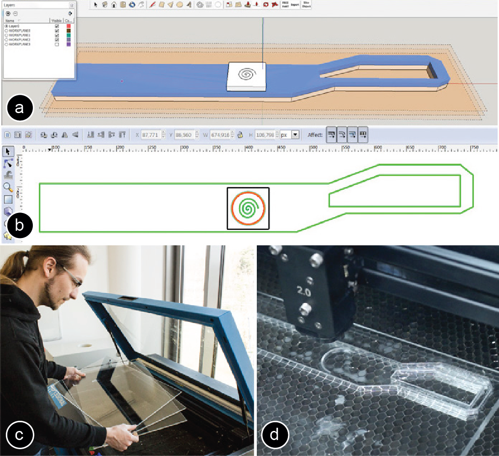

Publication
Mueller, S., Im, S., Gurevich, S., Teibrich, A., Pfisterer, L., Guimbretière, F., and Baudisch, P.
LaserStacker: Fabricating 3D Objects by Laser Cutting and Welding.
In Proceedings of
UIST ’15
, pp. 575-582.
Demo at UIST'15
DOI
Paper
Video
Slides
Talk
Press
Video
Talk
Slides


LaserStacker:
Fabricating 3D Objects by Laser Cutting and Welding
Figure 1: LaserStacker produces laser cut objects consisting of multiple layers of acrylic without requiring manual assembly: It assembles the object by not only cutting with the laser, but also welding, and healing the cut. Three example objects: (a) a pinball table with spring (10 min), (b) an architectural model of our university campus (7 min), and (c) a simple but functional pair of scissors (3 min).
Laser cutters are useful for rapid prototyping because they are fast. However, they only produce planar 2D geometry. One approach to creating non-planar objects is to cut the object in horizontal slices and to stack and glue them. This approach, however, requires manual effort for the assembly and time for the glue to set, defeating the purpose of using a fast fabrication tool. We propose eliminating the assembly step with our system LaserStacker. The key idea is to use the laser cutter to not only cut but also to weld. Users place not one acrylic sheet, but a stack of acrylic sheets into their cutter. In a single process, LaserStacker cuts each individual layer to shape (through all layers above it), welds layers by melting material at their interface, and heals undesired cuts in higher layers. When users take out the object from the laser cutter, it is already assembled.
To allow users to model stacked objects efficiently, we built an extension to a commercial 3D editor (SketchUp) that provides tools for defining which parts should be connected and which remain loose. When users hit the export button, LaserStacker converts the 3D model into cutting, welding, and healing instructions for the laser cutter. We show how LaserStacker does not only allow making static objects, such as architectural models, but also objects with moving parts and simple mechanisms, such as scissors, a simple pinball machine, and a mechanical toy with gear.
LaserStacker: How it works
Figure 1 shows three example objects created using LaserStacker—an architectural model of our university campus, a simple but functional pinball table, and scissors.
To illustrate LaserStacker’s workflow, Figure 2 illustrates how to make the pair of scissors. (a) The user starts by modeling the scissors in our LaserStacker editor, which we implemented as an extension to the popular 3D editor SketchUp [21] (see section “LaserStacker editor”). (b) After the user finished modeling, the user hits the export button, which causes LaserStacker to slice the 3D model into layers and to encode the information for each layer into a 2D vector format (.svg). In addition, LaserStacker exports a file with corresponding power settings for the laser (.las). (c) To fabricate the scissors, the user places a stack with the appropriate number of acrylic sheets (here three) into the laser cutter, loads both files into the laser cutter control panel, and executes the job. (d) The laser cutter produces the scissors in a single integrated process consisting of cutting all layers, welding the layers that should be connected, and healing the undesired cuts. When the user arrives at the cutter, the pair of scissors is already assembled. After removing the surplus material, the scissors are ready to be used to actually cut paper (Figure 1c). We now look at step (d), the cutting-welding-healing- releasing process, and step (a) the 3D editor in additional detail.

Figure 2: Creating the scissors with LaserStacker.
The Cutting-Welding-Healing-Releasing process
LaserStacker produces the scissors from three layers illustrated by Figure 3. The bottom layer contains the first scissor outline. The middle layer contains the second scissor outline and an axle around which it rotates. The top layer contains a rectangular cover connected to the axle that prevents the scissor blades from falling apart.
Figure 3: The scissors consist of three layers.
Figure 4 illustrates the steps of the fabrication process:(a) To create the scissor outline in the bottom layer, LaserStacker first cuts through the top layer, then through the middle layer, and finally through the bottom layer. In this particular case of cutting the scissor outline, this happens to be a desirable effect in that it already cuts the scissor outline in the middle layer. We will remove the scissor outline in the top layer (surplus material) later.
(b) LaserStacker now cuts the axle into the middle layer. This requires LaserStacker to cut the top layer as well, which in this case does not fit our intended design. LaserStacker will thus heal this cut in a later step. Figure 4: The cut/weld process illustrated at the example of the scissors. (c) LaserStacker welds the axle in the middle layer to the scissor outline in the bottom layer. Like any welding in a lower layer, this causes all layers above to be welded as well, causing the axle to be connected all the way through to the top layer. In this particular case, this is desired. In other cases, LaserStacker would release the weld later. We now have two scissor blades combined by a rotary joint; however, the rotary joint still lacks a cover. (d) LaserStacker cuts the axle cover in the top layer. This cut only touches the top layer, thus has no side effects on any of the other layers. (e) LaserStacker now heals the cut between the axle and the axle cover in the top layer that was caused in step (b). (f) We take the scissors out of the cutter. After removing the surplus material, the scissors are complete and we are ready to cut paper with them. Technical Details Laser Stacking Process We now provide additional technical explanations for the cutting, welding, healing, and releasing techniques. Cutting Cutting is a standard function of laser cutters. However, when cutting through a stack of layers, there are two things to note: (1) Cutting the lower layer requires cutting through all layers above. LaserStacker can heal the undesired cut on the top layer later. (2) Cutting a lower layer also welds all layers above together. For example, in Figure 4, this happens in (a) when the scissor blade is cut in the bottom layer. LaserStacker can later release the weld to break the undesired connection. Welding To weld two layers, LaserStacker cuts through the top layer plus roughly into 30% of the bottom layer (Figure 5), which results in material being liquefied along the cut. After a few seconds, the liquefied acrylic solidifies again and welds these two layers together. To weld multiple layers, LaserStacker repeats the process for each pair. As we show in the Technical Evaluation section, a welding of 10cm length with a 1mm cut width can sustain about 15kg weight, i.e., 1470 kPa. Figure 5: Welding two sheets of acrylic: (a) the laser cuts through the top layer and into 30% of bottom layer, (b) the heat along the laser path welds both layers. Any weld tends to require two types of repair: First, welding cuts through one or more layers above. LaserStacker resolves this by healing the cut. Second, as illustrated by Figure 5b, welding always connects layers on both sides of the cut. Since only one of the two sides is typically desired, LaserStacker later releases the weld on the other sides. Healing a cut As illustrated by Figure 6, LaserStacker heals a cut in two steps: (a) LaserStacker creates a new cut in close proximity to the gap (typically 0.4mm). (b) Due to thermal expansion, the isolated material sliver bends sideways during the cutting, thereby bridging the cut. LaserStacker now welds this bridge to the two sides: To do this, LaserStacker first defocuses the laser by moving the cutting table away from the lens. It then uses the defocused laser to heat up the region until the bridging sliver fuses with the material left and right. When it cools down, the piece forms a strong side-by-side weld with the remaining acrylic and thereby closes the gap. While the cut is still visible to the human eye, the weld is strong enough that it allows the part to perform a mechanical function. Our technical evaluation shows that healing can sustain about 784 kPa (half the strength of welding). Figure 6: Healing a cut: (a) creating a new cut in close proximity, (b) defocusing the laser and melting the piece to (c) create a strong side-by-side weld. Releasing a weld To release the undesired side of a weld (e.g. the left side in Figure 7a), LaserStacker creates another cut into that side in very close proximity (typically 0.2mm). The cut is so close that the material evaporates completely, thereby releasing the weld. Figure 7: Releasing a weld: (a) creating a new cut in very close proximity, (b) the material evaporates and releases the weld. Laserstacker Editor To help users design stacked objects using LaserStacker, we built a custom editing tool for it. The tool is implemented as an extension to the standard 3D modeling software SketchUp [21]. Figure 8 illustrates how we modeled the scissors from our earlier example. (a) We create a blank project by specifying the number of layers (here 3) and the size of the work plane (here 200mm x 50mm). (b) We then define the thickness for each layer, here 2.8mm each. The LaserStacker editor responds by displaying a three-layer project in its 3D view. The layers later on help users to align their design. Figure 8: Define (a) number of layers, (b) layer thicknesses. As shown in Figure 9a, we then draw the outline of our scissor onto the ground plane using SketchUp’s 2D path tool. We now extrude the path using SketchUp’s pull tool. The LaserStacker extension causes the pull tool to snap the extrusion to the individual layers, making it easy to get the thickness right. (b) We now create another identical outline on the middle layer by extruding the shape of the first outline further to the middle layer. (c) By default, the LaserStacker editor assumes that the user would like layers to be welded. To allow the two blades to move independently, we brush them using LaserStacker’s loosen tool. LaserStacker responds by coloring the two blades differently, indicating that they are now disconnected.
 Figure 9: (a) Sketch scissors outline, use pull tool to extrude to first scissor outline, then (b) second scissor outline. (c) Use loosen tool to disconnect both layers.
Figure 10 shows how we add the scissors’ axle. We import an axle with cover master shape from the LaserStacker master shape library, which contains simple mechanisms and other commonly used parts.
Figure 10: (a) Loading an axle from the master shape library. (b) The axle has an extra strong weld in the middle.
The axle with cover contains a circular cut with a strong weld in the middle, which is achieved by cutting the spiral in the center. We scale the axle with cover to the right size and place it in the correct location on the scissors.
We are done modeling now. We click the export button, which causes LaserStacker to convert the 3D model into an .svg file containing 2D vector lines and a corresponding .las file with the power settings for the laser (Figure 11). These two files together encode the cut/weld/heal/release process described earlier. We load the files into the standard control panel of our laser cutter and send the cut job to the laser.
Figure 11: LaserStacker exports (a) an .svg file with 2D paths, and (b) a laser settings file with the power/speed settings, here we already loaded it into the laser cutter’s control panel.
Contribution, Benefits
The main contribution of this paper is a system called LaserStacker that allows users to fabricate stacked objects without manual assembly using a new cut/weld fabrication process. We provide a custom editor for this class of objects (as an extension to the SketchUp 3D editor). The key technical contribution is the export function that translates the 3D model into an instruction set for a standard laser cutter, which produces that object.
The cut/weld process behind LaserStacker is a fast laser fabrication technique useful for making functional objects from stacked sheets of acrylic. Its main advantage is that it eliminates the need for assembly. Unlike LaserOrigami [17], which only produces origami-like geometry, LaserStacker allows building objects with moving parts.
The objects produced by our system can be grouped into three classes (1) pyramid/tapered shape, whose top layers are smaller than the bottom layers (e.g. the architectural model in Figure 1a, the robot in Figure 12a, and the air hockey table in Figure 12c). This works without healing. (2) Objects, which top layers are larger than the bottom layers require healing (e.g. the head and tail of the mechanical horse toy in Figure 12b are larger than the bottom layer). (3) In addition to the main class of objects that are produced in a fully automated fashion, users can also feed additional material halfway into the process; this process allows creating also objects that have surplus material inside (e.g. in Figure 12b users have to remove the surplus between the pair of gears before they can add the top layer).
Figure 12: Different classes of objects: (a, c) pyramid shapes do not require healing. (b) Other shapes require healing. The little robot and the mechanical horse toy take 2.5 min to fabricate, while the pinball table takes 14 min due to its thicker layers.
Software Implementation
To allow readers to replicate our technique, we now describe the internal working of our software and hardware.
Converting a 3D model into a set of 2D contours
In order to convert a 3D model into 2D contours for laser cutting, we first find all edges that are parallel to the x-y plane, i.e. these are the edges that lay on one of the layers. When the user extrudes the face upward, each edge has a corresponding parallel edge on one of the top layers. The distance between a pair of edges defines through how many layers the laser cutter has to cut. We thus replicate the same edge onto all layers that also have to be cut.
In addition, our software tests if each cut on a bottom layer is reachable, i.e. if all layers above were also cut. If a cut is not reachable, we replicate the cut on each top layer.
Exporting the laser cut path and laser settings file
To generate the laser path file, we draw the extracted contours into an .svg file. We iterate over the layers, starting from the top. Since each layer needs different laser speed settings, we draw the contours of each layer in a separate color.
The laser settings file (for our laser cutter model: .las), is a text file with a list of colors that maps onto different speed and power settings for the laser cutter. To compensate for the limited number of power settings in some laser cutter software, our extension is capable of generating multiple sets of svg + power setting files.
Identifying cut and weld edges
Since cutting and welding use different laser settings, we differentiate between edges for welding and edges for cutting. Since the LaserStacker color-codes which components are connected, our software looks at the color of the faces around an edge to identify if it should be cut or welded (same color = weld, different color = cut).
Computing the healing path
To identify, which parts require healing, our software takes all cut lines on lower layers and projects them onto the top layer. If an edge lies inside some geometry on the top surface, this part needs to be healed. Otherwise, the edge is part of the surplus material and does not require healing as it is not part of the final object. On export, our software automatically generates the additional offset edges that are required for healing.
Not all compositions of cutting-welding-healing commands are possible. In conditions where healing is not possible, e.g., more than one healing operation at the same location in different layers, or healing results in trapped material. In these cases, the LaserStacker Editor informs the user by color-coding the layer in the 3D model.
Master shapes
For the master shape library, we created 3D models of several mechanical elements with different pre-defined parameters. LaserStacker loads them according to the scale of the current design.
Calibrating Laser Cutter Settings
To allow readers to replicate our results, we describe the calibration procedure that we used to determine the laser power setting for cutting and welding different layers in the stack. The required settings (power, speed, cut depth) depend on the hardware setup and the acrylic in use. The user only needs to perform the calibration procedure once before using LaserStacker for the first time. Currently, our procedure assumes that the stack consists of acrylic sheets with the same thickness.
Focus point of the laser
LaserStacker always keeps the laser beam focused on the top of the stack, i.e. for welding layers that are further apart from the focal point we increase the power of the laser (see Figure 13).
We focus on top of the stack for two reasons: (1) It allows for larger stacking heights since focusing on the top layer keeps the stack at a constant distance to the lens (thus avoiding collisions). For instance, our lens has a 20mm focal length, which means that focusing on lower layers would limit the stack height to 20mm. (2) Focusing the laser inside the stack caused burning. We believe the burning happens because a deeper focus point results in a cone shaped laser beam that 1) generates diffusion and refraction when going through top layers and 2) creates a funnel that ignites the acrylic as the laser heats up the remaining edges of top layers.
Figure 13: We increase the laser power as we move away from the focal point of the laser.
Estimating the Laser Power Setting
To minimize the fabrication time, we always set power to 100% and only control the cutting speed. The slower the laser moves the more heat is accumulated at a certain location.
We formulate the curve for laser speed as
S_(n+1)=〖S_n〗^(at+b)
The recursive formula takes as inputs the thickness of the acrylic t, the cutting speed for a single layer of acrylic S, and the cutting speed for the nth layer, and outputs the cutting speed for the n+1th layer. It implies that given the cutting speed of the first layer, the formula can output the cutting speed for each layer in the stack.
Both a and b are parameters that we estimate based on experimental data (see section Calibration Procedure).
The proposed recursive formula implies that we can estimate the cutting speed of the n+1th layer based on the speed of the nth layer. This reflects our assumption that a specific portion of energy is lost in the area above the layer that is currently being cut due to (1) the reflection of the laser as it goes through layers, (2) the defocus of the laser, and (3) the remaining residues in top layers.
Calibration Procedure
We obtain the parameters a and b by first collecting data points for stacks of different heights and then estimating the values of a and b using a standard curve fitting procedure.
We collected data points using the calibration pattern shown in Figure 14. It consists of six squares with different stacking heights from one to six layers. We iteratively tried different speed settings until we found the maximum speed setting for welding at a specific layer height.
Figure 14: Calibration pattern to determine laser power for welding up to six layers of acrylic.
We repeated the process for different thicknesses of acrylic sheets from 2mm to 5mm. Afterwards, we applied a standard curve fitting formula (Figure 15).
Figure 15: Measured data points and predicted data points based on the laser welding formula.
In our lab setup, LaserStacker can stack up to a total height of 24mm of acrylic layers. Beyond 24mm, the accumulated heat in the stack results in undesired bubbles next to the cut.
Evaluating the Welding/Healing Strength
We performed a technical evaluation on the strength of both welding and healing, i.e., the maximum shear stress. Note that the stress value is measured as force per area (with the unit of Pa, defined as Newton per square meter). While the length of the weld/heal path can be easily determined, the thickness along the path varies under different laser power setting and is difficult to measure. For this evaluation, we thus assume the path has the width of 1mm.
Welding strength
We used a 2.5cm x 2.5cm square cut from 5mm acrylic, welded onto a larger piece. To measure welding strength we apply the same procedure as is normally used for measuring adhesiveness of glue, i.e. we measure the maximum shearing force until the weld breaks.
Figure 16 shows our measurement apparatus: We mounted the welded piece vertically, then iteratively added weights to a platform that we attached to the piece. The weld is strong enough to hold more than 15kg, i.e., 1470 kPa.
Figure 16: A weld holds more than 15kg of weight.
Healing strength
We also measured the strength of connection generated by the healing procedure. Figure 17a shows the measurement platform. We first cut a 2.5cm x 2.5cm square from a sheet of 5mm acrylic, then healed the cut on each side of the square. We put the healed piece between two aluminum bars and iteratively added weights to it (Figure 17b). We repeated the process 10 times. The results show that the healing of a 2.5cm x 2.5cm square can support approximately 8 kg (µ = 8.8 and SD = 1.22), i.e., 784 kPa. Welding and healing are thus strong enough for fabricating mechanical elements, such as the axles and gears shown in our example objects.
Figure 17: A healed piece holds more than 8kg weight.
Discussion
The laser stacking process is applicable to all materials that liquefy above a certain temperature and solidify upon cooling, e.g., thermoplastics. It does not work for other materials, such as wood, cardboard, paper, and leather.
The color of the material is generally not an issue. Most thermoplastics are equally opaque to a carbon dioxide laser. However, one thing to note is that sheets with different colors imply different material compositions and thus might require a separate calibration process.
LaserStacker’s finest resolution in the z-direction is limited by the layer-thickness of a sheet. The thinnest usable acrylic sheet in our experiments was 1 mm. Welding sheets thinner than 1mm resulted in undesired bending along the cut lines. Laser slope engraving could achieve finer resolution in z-direction, but it slows down the stacking process.
Like other layered-object manufacturing techniques, the laser stacking process results in surplus material, which is discarded in the end. Removing surplus material could involve some prying if the laser is not perfectly calibrated.
All objects presented in the paper are fabricated in a fully automated process. However, LaserStacker also provides an option that allows users to incrementally add sheets into the laser cutter one-by-one. This offers the following advantages: (1) trapped surplus material can be easily removed, (2) fabrication is even faster, as the laser only has to process the top most layer, which also allows for (3) objects thicker than the 24mm. A drawback of this approach is that users have to carefully align the acrylic sheets, preferably with the help of additional alignment objects or alignment holes.
Conclusion
We presented LaserStacker, a system that fabricates stacked 3D objects on a laser cutter without manual assembly using a new cutting/welding/healing process. We presented our LaserStacker extension to the 3D editor SketchUp; it allows users to quickly create 3D objects based on the LaserStacker fabrication process. We demonstrate how LaserStacker produces a variety of different objects, such as static objects and objects with moving parts. Finally, the technical evaluation shows that LaserStacker can stack up to a total height of 24mm and the welding can withstand the sheering stress of around 1470 kPa.
For future work, we plan to integrate LaserStacker with LaserOrigami [17] and Platener [3]. We expect the combination of them to result in a particular expressive vocabulary of non-planar laser cutting techniques.
Figure 9: (a) Sketch scissors outline, use pull tool to extrude to first scissor outline, then (b) second scissor outline. (c) Use loosen tool to disconnect both layers.
Figure 10 shows how we add the scissors’ axle. We import an axle with cover master shape from the LaserStacker master shape library, which contains simple mechanisms and other commonly used parts.
Figure 10: (a) Loading an axle from the master shape library. (b) The axle has an extra strong weld in the middle.
The axle with cover contains a circular cut with a strong weld in the middle, which is achieved by cutting the spiral in the center. We scale the axle with cover to the right size and place it in the correct location on the scissors.
We are done modeling now. We click the export button, which causes LaserStacker to convert the 3D model into an .svg file containing 2D vector lines and a corresponding .las file with the power settings for the laser (Figure 11). These two files together encode the cut/weld/heal/release process described earlier. We load the files into the standard control panel of our laser cutter and send the cut job to the laser.
Figure 11: LaserStacker exports (a) an .svg file with 2D paths, and (b) a laser settings file with the power/speed settings, here we already loaded it into the laser cutter’s control panel.
Contribution, Benefits
The main contribution of this paper is a system called LaserStacker that allows users to fabricate stacked objects without manual assembly using a new cut/weld fabrication process. We provide a custom editor for this class of objects (as an extension to the SketchUp 3D editor). The key technical contribution is the export function that translates the 3D model into an instruction set for a standard laser cutter, which produces that object.
The cut/weld process behind LaserStacker is a fast laser fabrication technique useful for making functional objects from stacked sheets of acrylic. Its main advantage is that it eliminates the need for assembly. Unlike LaserOrigami [17], which only produces origami-like geometry, LaserStacker allows building objects with moving parts.
The objects produced by our system can be grouped into three classes (1) pyramid/tapered shape, whose top layers are smaller than the bottom layers (e.g. the architectural model in Figure 1a, the robot in Figure 12a, and the air hockey table in Figure 12c). This works without healing. (2) Objects, which top layers are larger than the bottom layers require healing (e.g. the head and tail of the mechanical horse toy in Figure 12b are larger than the bottom layer). (3) In addition to the main class of objects that are produced in a fully automated fashion, users can also feed additional material halfway into the process; this process allows creating also objects that have surplus material inside (e.g. in Figure 12b users have to remove the surplus between the pair of gears before they can add the top layer).
Figure 12: Different classes of objects: (a, c) pyramid shapes do not require healing. (b) Other shapes require healing. The little robot and the mechanical horse toy take 2.5 min to fabricate, while the pinball table takes 14 min due to its thicker layers.
Software Implementation
To allow readers to replicate our technique, we now describe the internal working of our software and hardware.
Converting a 3D model into a set of 2D contours
In order to convert a 3D model into 2D contours for laser cutting, we first find all edges that are parallel to the x-y plane, i.e. these are the edges that lay on one of the layers. When the user extrudes the face upward, each edge has a corresponding parallel edge on one of the top layers. The distance between a pair of edges defines through how many layers the laser cutter has to cut. We thus replicate the same edge onto all layers that also have to be cut.
In addition, our software tests if each cut on a bottom layer is reachable, i.e. if all layers above were also cut. If a cut is not reachable, we replicate the cut on each top layer.
Exporting the laser cut path and laser settings file
To generate the laser path file, we draw the extracted contours into an .svg file. We iterate over the layers, starting from the top. Since each layer needs different laser speed settings, we draw the contours of each layer in a separate color.
The laser settings file (for our laser cutter model: .las), is a text file with a list of colors that maps onto different speed and power settings for the laser cutter. To compensate for the limited number of power settings in some laser cutter software, our extension is capable of generating multiple sets of svg + power setting files.
Identifying cut and weld edges
Since cutting and welding use different laser settings, we differentiate between edges for welding and edges for cutting. Since the LaserStacker color-codes which components are connected, our software looks at the color of the faces around an edge to identify if it should be cut or welded (same color = weld, different color = cut).
Computing the healing path
To identify, which parts require healing, our software takes all cut lines on lower layers and projects them onto the top layer. If an edge lies inside some geometry on the top surface, this part needs to be healed. Otherwise, the edge is part of the surplus material and does not require healing as it is not part of the final object. On export, our software automatically generates the additional offset edges that are required for healing.
Not all compositions of cutting-welding-healing commands are possible. In conditions where healing is not possible, e.g., more than one healing operation at the same location in different layers, or healing results in trapped material. In these cases, the LaserStacker Editor informs the user by color-coding the layer in the 3D model.
Master shapes
For the master shape library, we created 3D models of several mechanical elements with different pre-defined parameters. LaserStacker loads them according to the scale of the current design.
Calibrating Laser Cutter Settings
To allow readers to replicate our results, we describe the calibration procedure that we used to determine the laser power setting for cutting and welding different layers in the stack. The required settings (power, speed, cut depth) depend on the hardware setup and the acrylic in use. The user only needs to perform the calibration procedure once before using LaserStacker for the first time. Currently, our procedure assumes that the stack consists of acrylic sheets with the same thickness.
Focus point of the laser
LaserStacker always keeps the laser beam focused on the top of the stack, i.e. for welding layers that are further apart from the focal point we increase the power of the laser (see Figure 13).
We focus on top of the stack for two reasons: (1) It allows for larger stacking heights since focusing on the top layer keeps the stack at a constant distance to the lens (thus avoiding collisions). For instance, our lens has a 20mm focal length, which means that focusing on lower layers would limit the stack height to 20mm. (2) Focusing the laser inside the stack caused burning. We believe the burning happens because a deeper focus point results in a cone shaped laser beam that 1) generates diffusion and refraction when going through top layers and 2) creates a funnel that ignites the acrylic as the laser heats up the remaining edges of top layers.
Figure 13: We increase the laser power as we move away from the focal point of the laser.
Estimating the Laser Power Setting
To minimize the fabrication time, we always set power to 100% and only control the cutting speed. The slower the laser moves the more heat is accumulated at a certain location.
We formulate the curve for laser speed as
S_(n+1)=〖S_n〗^(at+b)
The recursive formula takes as inputs the thickness of the acrylic t, the cutting speed for a single layer of acrylic S, and the cutting speed for the nth layer, and outputs the cutting speed for the n+1th layer. It implies that given the cutting speed of the first layer, the formula can output the cutting speed for each layer in the stack.
Both a and b are parameters that we estimate based on experimental data (see section Calibration Procedure).
The proposed recursive formula implies that we can estimate the cutting speed of the n+1th layer based on the speed of the nth layer. This reflects our assumption that a specific portion of energy is lost in the area above the layer that is currently being cut due to (1) the reflection of the laser as it goes through layers, (2) the defocus of the laser, and (3) the remaining residues in top layers.
Calibration Procedure
We obtain the parameters a and b by first collecting data points for stacks of different heights and then estimating the values of a and b using a standard curve fitting procedure.
We collected data points using the calibration pattern shown in Figure 14. It consists of six squares with different stacking heights from one to six layers. We iteratively tried different speed settings until we found the maximum speed setting for welding at a specific layer height.
Figure 14: Calibration pattern to determine laser power for welding up to six layers of acrylic.
We repeated the process for different thicknesses of acrylic sheets from 2mm to 5mm. Afterwards, we applied a standard curve fitting formula (Figure 15).
Figure 15: Measured data points and predicted data points based on the laser welding formula.
In our lab setup, LaserStacker can stack up to a total height of 24mm of acrylic layers. Beyond 24mm, the accumulated heat in the stack results in undesired bubbles next to the cut.
Evaluating the Welding/Healing Strength
We performed a technical evaluation on the strength of both welding and healing, i.e., the maximum shear stress. Note that the stress value is measured as force per area (with the unit of Pa, defined as Newton per square meter). While the length of the weld/heal path can be easily determined, the thickness along the path varies under different laser power setting and is difficult to measure. For this evaluation, we thus assume the path has the width of 1mm.
Welding strength
We used a 2.5cm x 2.5cm square cut from 5mm acrylic, welded onto a larger piece. To measure welding strength we apply the same procedure as is normally used for measuring adhesiveness of glue, i.e. we measure the maximum shearing force until the weld breaks.
Figure 16 shows our measurement apparatus: We mounted the welded piece vertically, then iteratively added weights to a platform that we attached to the piece. The weld is strong enough to hold more than 15kg, i.e., 1470 kPa.
Figure 16: A weld holds more than 15kg of weight.
Healing strength
We also measured the strength of connection generated by the healing procedure. Figure 17a shows the measurement platform. We first cut a 2.5cm x 2.5cm square from a sheet of 5mm acrylic, then healed the cut on each side of the square. We put the healed piece between two aluminum bars and iteratively added weights to it (Figure 17b). We repeated the process 10 times. The results show that the healing of a 2.5cm x 2.5cm square can support approximately 8 kg (µ = 8.8 and SD = 1.22), i.e., 784 kPa. Welding and healing are thus strong enough for fabricating mechanical elements, such as the axles and gears shown in our example objects.
Figure 17: A healed piece holds more than 8kg weight.
Discussion
The laser stacking process is applicable to all materials that liquefy above a certain temperature and solidify upon cooling, e.g., thermoplastics. It does not work for other materials, such as wood, cardboard, paper, and leather.
The color of the material is generally not an issue. Most thermoplastics are equally opaque to a carbon dioxide laser. However, one thing to note is that sheets with different colors imply different material compositions and thus might require a separate calibration process.
LaserStacker’s finest resolution in the z-direction is limited by the layer-thickness of a sheet. The thinnest usable acrylic sheet in our experiments was 1 mm. Welding sheets thinner than 1mm resulted in undesired bending along the cut lines. Laser slope engraving could achieve finer resolution in z-direction, but it slows down the stacking process.
Like other layered-object manufacturing techniques, the laser stacking process results in surplus material, which is discarded in the end. Removing surplus material could involve some prying if the laser is not perfectly calibrated.
All objects presented in the paper are fabricated in a fully automated process. However, LaserStacker also provides an option that allows users to incrementally add sheets into the laser cutter one-by-one. This offers the following advantages: (1) trapped surplus material can be easily removed, (2) fabrication is even faster, as the laser only has to process the top most layer, which also allows for (3) objects thicker than the 24mm. A drawback of this approach is that users have to carefully align the acrylic sheets, preferably with the help of additional alignment objects or alignment holes.
Conclusion
We presented LaserStacker, a system that fabricates stacked 3D objects on a laser cutter without manual assembly using a new cutting/welding/healing process. We presented our LaserStacker extension to the 3D editor SketchUp; it allows users to quickly create 3D objects based on the LaserStacker fabrication process. We demonstrate how LaserStacker produces a variety of different objects, such as static objects and objects with moving parts. Finally, the technical evaluation shows that LaserStacker can stack up to a total height of 24mm and the welding can withstand the sheering stress of around 1470 kPa.
For future work, we plan to integrate LaserStacker with LaserOrigami [17] and Platener [3]. We expect the combination of them to result in a particular expressive vocabulary of non-planar laser cutting techniques.